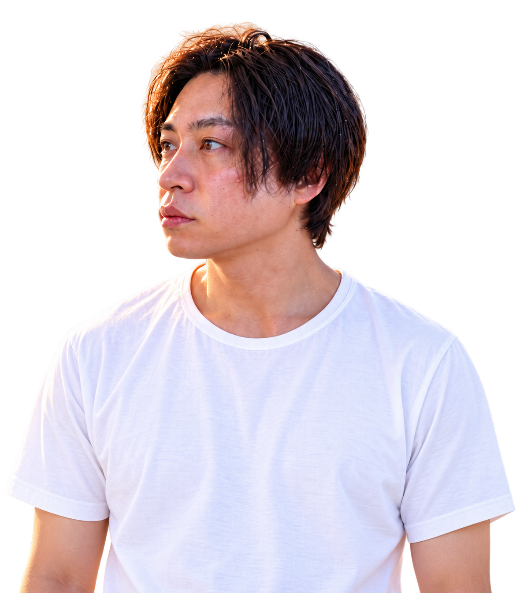

THIS IS MY WAY OF LIFE.

それが、僕の仕事です。
石丸篤史 ／ 世界のまる
01 / THE IDEAART FOR BEING
表現する自由。
いまの自分を、
出していい。
人目を気にせず、現在の自分を表すこと。
表現の仕方に、決まった正解はありません。
僕は、自分にできる方法で、それを続けてきました。
MAKE WHAT YOU FEEL.

02 / WHAT I DOFOUR WAYS TO EXPRESS
手段は、
ひとつじゃない。
ヘアメイクから始まり、デザイン、アート、イベントへ。
表現する対象や方法を変えながら、活動を広げてきました。


03 / MAKE A PLACE自分が表現する。
100人のアーティスト展を見る2024年8月〜2026年8月の累計
自分が表現する。
その先に、
人が表現できる場を。
「100人のアーティスト展」を主催。出展する人たちも運営に参加し、一緒に場をつくっています。
4開催回数
441累計出展者数
1,530累計来場者数
04 / WHAT'S NEXTAI & HUMAN TIME
ART FOR BEING
生きることを、
表現しよう。
企画も、作品も、まだ名前のないアイデアも。
一緒に、かたちにしていきたい。